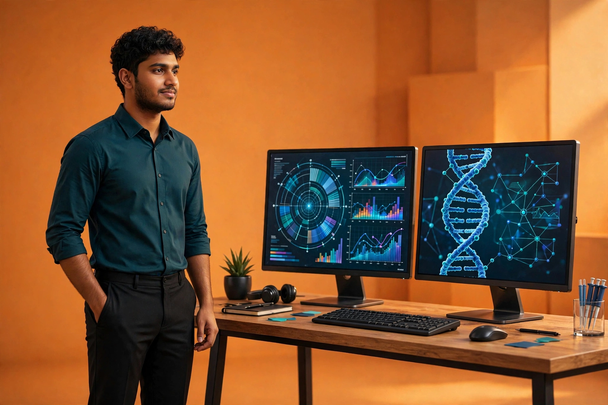

What's next
LET'S SEQUENCE
SOMETHING GREAT.
SOMETHING GREAT.
Open to bioinformatics and clinical genomics roles across the US.
Production NGS pipelines, variant interpretation, genomic data platforms, and agentic AI that reads the evidence behind every call — systems research and clinical teams depend on.

My face.
Press play — a guided voice tour of everything inside this portfolio.
Move your pointer — each project sits at its own depth. Click a card to open it on GitHub.
Open to bioinformatics and clinical genomics roles across the US.